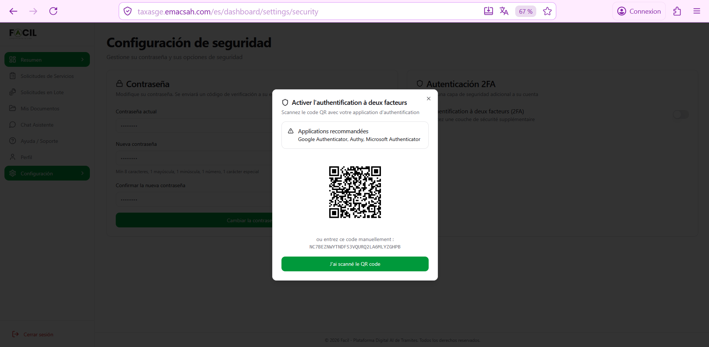

Autenticación de dos factores (2FA)
La autenticación de dos factores (2FA) basada en TOTP es la protección más fuerte contra el robo de su cuenta. Activarla añade un código de 6 cifras generado por una aplicación de autenticación cada vez que inicia sesión — incluso si alguien obtiene su contraseña, no puede entrar sin su teléfono.
1. ¿Por qué activar el 2FA?
El 2FA protege su cuenta incluso si su contraseña es comprometida (filtración, phishing, ataque de fuerza bruta). Cifras concretas:
- Sin 2FA, una cuenta con contraseña filtrada es comprometida en menos de 24 horas en promedio.
- Con 2FA, el atacante necesitaría además su teléfono — riesgo casi nulo a distancia.
- El 2FA es obligatorio para los agentes públicos y administradores. Recomendado fuertemente para todos.
2. Aplicaciones recomendadas
Necesita una aplicación de autenticación TOTP (Time-based One-Time Password) en su teléfono. Las más usadas:
| Aplicación | Plataformas | Ventajas |
|---|---|---|
| Google Authenticator | Android / iOS | Simple, gratuito, soporte exportación entre teléfonos |
| Authy | Android / iOS / Desktop | Sincronización multi-dispositivo, copia de seguridad cifrada en la nube |
| Microsoft Authenticator | Android / iOS | Notificaciones push, integración con cuentas Microsoft |
| 1Password / Bitwarden | Multiplataforma | Integrado con su gestor de contraseñas (rellena códigos automáticamente) |
3. Activar el 2FA paso a paso
- Conéctese a su cuenta y vaya a Configuración → Seguridad.
- En la tarjeta «Autenticación 2FA», pulse el conmutador para activarlo.
- Aparece un modal con un QR código y un código manual alfanumérico.
- Abra su aplicación de autenticación → «Añadir cuenta» → «Escanear QR código» → apunte la cámara hacia el QR de la pantalla. La cuenta «Facil» se añade automáticamente con un código que cambia cada 30 segundos.
- Si no puede escanear (problema cámara), copie el código manual y peguelo en su aplicación («Añadir cuenta» → «Manualmente»).
- Pulse «He escaneado el QR» en Facil. Una pantalla le pide introducir el código actual de su aplicación (6 cifras) para validar la activación.
- Tras la validación, recibirá 10 códigos de respaldo a un solo uso (sección 4).

NC7BEZNWYTNDF53VQURQ2LA6MLYZGHPB) + lista de aplicaciones recomendadas (Google/Authy/Microsoft) + botón «J'ai scanné le QR code» (capturado en versión francesa).4. Códigos de respaldo (10 únicos)
Tras activar el 2FA, Facil le entrega 10 códigos de respaldo alfanuméricos a un solo uso. Estos códigos le permiten conectarse si pierde acceso a su aplicación de autenticación (teléfono perdido, robado, destruido).
Cómo guardarlos correctamente
- Imprimirlos y guardarlos en un lugar seguro (caja fuerte, archivos personales)
- Guardarlos en su gestor de contraseñas (Bitwarden, 1Password) cifrados
- NO guardarlos en notas no cifradas en su teléfono o como captura de pantalla
- NO compartirlos con nadie
Cómo usarlos
En la pantalla de inicio de sesión 2FA, pulse el enlace «Usar un código de respaldo» en lugar de introducir el código TOTP. Introduzca uno de los 10 códigos. Tras uso, ese código se invalida — quedan 9. Si los gasta todos, deberá regenerar nuevos códigos desde Configuración → Seguridad.
5. Uso diario con 2FA activo
Tras activar el 2FA, su flujo de inicio de sesión cambia ligeramente:
- Email + contraseña como de costumbre.
- Una segunda pantalla aparece pidiendo el código TOTP de su aplicación.
- Abra su aplicación → encuentre la entrada «Facil» → copie el código de 6 cifras (renueva cada 30 segundos).
- Pegue el código en Facil → conexión completada.
Tiempo total ~10 segundos suplementarios. Si activa el «Recordar este dispositivo» después de la validación, no se le pedirá el código 2FA durante 30 días en este dispositivo (a usar con prudencia, solo en su teléfono personal).
6. Desactivar el 2FA
No recomendado, pero posible si tiene problemas con su aplicación de autenticación:
- Conéctese y vaya a Configuración → Seguridad.
- Pulse el conmutador 2FA para desactivarlo.
- Confirme con su contraseña + un código TOTP válido (o un código de respaldo).
- El 2FA está desactivado. Su cuenta solo está protegida por la contraseña.